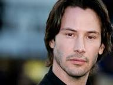
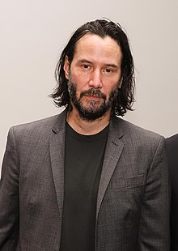

Introducción
Keanu Reeves es un famoso actor de cine, conocido tanto por sus obras en el cine como por su estilo de vida simple. Dentro de su filmografía, las películas más destacables son:- John Wick
- Matrix
- Otro día para matar
- Constantine
- Dulce Noviembre
Biografía
Keanu Charles Reeves nació en Beirut el 2 de septiembre de 1964, es hijo de Patricia Taylor, diseñadora de vestuario y artista, y Samuel Nowlin Reeves, Jr. Su madre es inglesa, oriunda de Essex. Su padre, un estadounidense de Hawái, es de ascendencia china, hawaiana, inglesa, irlandesa y portuguesa. Reeves ha dicho: "Mi abuela es china y hawaiana, así que estuve cerca del arte, los muebles y la cocina chinas a medida que crecía". También ha hablado de su ascendencia inglesa, mencionando ver programas de comedia como The Two Ronnies durante su infancia y cómo su madre impartió modales en inglés que mantuvo hasta la edad adulta. La madre de Reeves estaba trabajando en Beirut cuando conoció a su padre.
Se educó en Comunión Anglicana, (Iglesia Anglicana de Canadá), desde 1970 tiene como residencia principal Toronto, Ontario (Canadá).
El padre de Reeves obtuvo su GED mientras estaba preso en Hawái por vender heroína en el Aeropuerto Internacional de Hilo. Abandonó a su esposa y a su familia cuando Reeves tenía tres años, pero él lo conoció cuando tenía seis años. Se reunieron por última vez en la isla de Kauai cuando tenía 13 años. Después de que sus padres se divorciaran en 1966, su madre se convirtió en diseñadora de vestuario y se mudó con la familia a Sídney y luego a Nueva York, donde se casó con Paul Aaron, un director de Broadway y Hollywood, en 1970. La pareja se mudó a Toronto, Ontario, y se divorció en 1971. Cuando Reeves tenía 15 años, trabajó como asistente de producción en las películas de Aaron. La madre de Reeves se casó en 1976 con Robert Miller, un promotor de música rock, del que se divorciaría en 1980. Posteriormente, se casó con un peluquero llamado Jack Bond. El matrimonio se disolvió en 1994. Los abuelos y las niñeras cuidaban de él y sus hermanas, y Reeves creció principalmente en el vecindario de Yorkville en Toronto.

En el transcurso de cinco años, asistió a cuatro escuelas secundarias, incluida la Escuela de Artes Etobicoke, de la que fue expulsado. Reeves declaró que lo echaron porque era "demasiado astuto y hablaba más de la cuenta con demasiada frecuencia ... no era generalmente la máquina mejor engrasada de la escuela". Tuvo éxito como portero de hockey sobre hielo en la Universidad de La Salle. Soñaba con jugar al hockey sobre hielo para Canadá, pero una lesión lo obligó a considerar otras profesiones. Después de dejar La Salle, asistió a la Escuela Alternativa Secundaria Avondale, lo que le permitió obtener una educación mientras trabajaba como actor. Más tarde, la abandonó y no obtuvo un diploma de escuela secundaria.